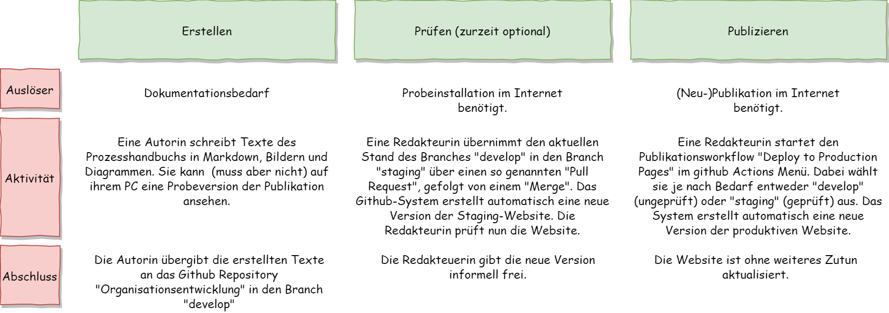
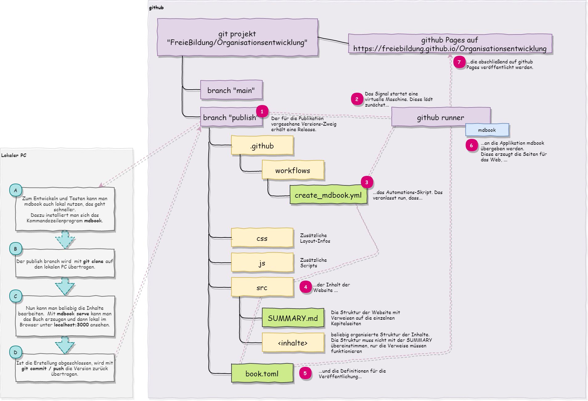

Publikation
Ausgabeziel
Website
Das Handbuch zur Organisationsentwicklung wird weitgehend automatisch publiziert. Dazu dient die versionierte Ablage aller Inhalte im github Projekt-Repository. Zum Schreiben und schnellen Testen kann die Erzeugung auch lokal auf dem PC durchgeführt werden.
Die Erzeugung von PDFs ist möglich, allerdings momentan noch eingeschränkt.
- Keine Titelseite
- Keine Prozessdiagramme (ein Workaround findet sich auf der Seite zur Eingliederungshilfe)
- Nicht automatisierbar, das Modul führt zu Fehlern im automatischen Deployment.
Prozessbeteiligte
- Autorin
- Redakteurin
Der ideale Prozess
Ablauf
-
Autorinnen schreiben in Markdown und speichern im github-Repository Organisationsentwicklung in den Branch develop. Sie können lokal ihre Änderungen testen, wenn ihr System dafür eingerichtet ist.
-
Eine Redakteurin kann durch einen Pull-Request die letzten Änderungen von develop nach staging übernehmen (dies erfolgt über diese Github-Seite. Dieser Pull-Request löst eine Publikation auf die Pages des Repositories aus, so dass nun alle erstellten Änderungen auch auf einer Testseite im Internet zu sehen sind. Die Seite steht im Anschluss unter https://freiebildung.github.io/Organisationsentwicklung/ zur Verfügung. Dieser Schritt ist optional und wird vor allem bei größeren Änderungen ohne lokale Vorprüfung empfohlen
-
Die verantwortliche Redakteurin kann die Seite auf die offizielle Website übernehmen. Dies erfolgt zurzeit über den manuellen Start des Produktionsworkflows "Run Workflow" auf dieser Seite. Dabei kann der Workflow vom Branch "develop" (ungeprüft) oder "staging" (geprüft) die Daten lesen. Das System publiziert nun automatisch nach https://www.servicenetzwerk-freie-bildung.de.
Regelungen
- Organisatorische Festlegung, wer wann vor der Publikation prüft.
Voraussetzungen
- Prozessteilnehmerinnen haben Zugriff auf das github-Projekt und sind in die Abläufe eingewiesen.
Prozessfehler
Prozessfehler führen zu einem gescheiterten Workflow oder einem unerwünschten Ergebnis auf der Website. Die Prozessfehler können auf der Github-Seite zu Actions gesehen und untersucht werden. Der häufigste Fehler liegt in ungültigen Verweisen ausgehend von der SUMMARY.md Datei.
Prozesskennzahlen
- Anzahl der Prüfungen
- Anzahl der Produktionsdeployments
- Prozessdurchlaufzeit
- Prozesskosten
- Fehlerquote der Produktionsdeployments
Prozessartefakte
- Versionierte Dokumentation
- Publizierte Staging-Website
- Publizierte Produktions-Website
Prozessablauf
Übersicht über den Publikationsprozess

Technischer Ablauf im Detail
Darstellung vereinfacht für die Erstellung der Staging-Umgebung.

Erzeugung des PDFs
Für die PDF-Erzeugung muss book.toml modifiziert werden. Dieser Abschnitt wird angehängt:
[output.pdf]
optional=true
display-header-footer = true
paperWidth = 8.2
paperHeight = 11.6
header-template = "<h3 style='font-size:12px; margin-left: 48px' class='title'></h3>"
footer-template = "<p style='font-size:10px; margin-left: 48%'><span class='pageNumber'></span> / <span class='totalPages'></span></p>"
Der Aufruf kann dann von der Linux-Kommandozeile erfolgen:
docker run --rm -v /path/to/book:/book -v ~/.cargo/bin:/mdbook hollowman6/mdbook-pdf
Das PDF liegt nach erfolgreicher Erzeugung in book/pdf/output.pdf.